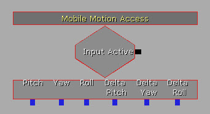
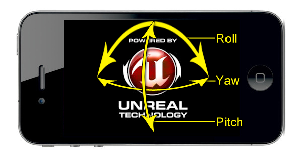
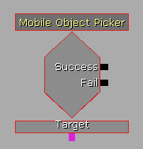
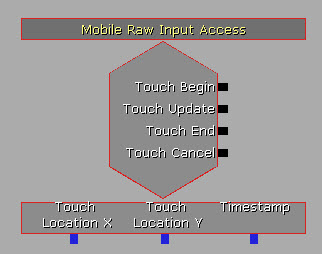
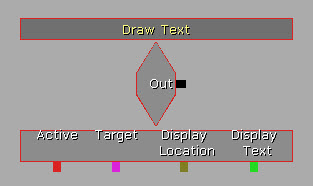
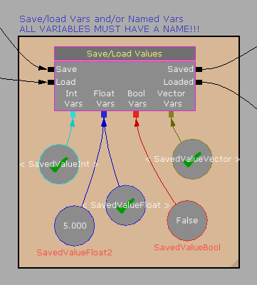

UDN
Search public documentation:
MobileKismetReferenceCH
English Translation
日本語訳
한국어
Interested in the Unreal Engine?
Visit the Unreal Technology site.
Looking for jobs and company info?
Check out the Epic games site.
Questions about support via UDN?
Contact the UDN Staff
日本語訳
한국어
Interested in the Unreal Engine?
Visit the Unreal Technology site.
Looking for jobs and company info?
Check out the Epic games site.
Questions about support via UDN?
Contact the UDN Staff
移动设备Kismet参考指南
概述
输入
动作
这些Kismet动作用于从Kismet中设置输入区域。添加输入区域
 Add Input Zone(添加输入区域)动作会向屏幕上添加一个单独的输入区域。
注意: 如果您想附加任何同特定输入区域(
Add Input Zone(添加输入区域)动作会向屏幕上添加一个单独的输入区域。
注意: 如果您想附加任何同特定输入区域( MobileButton 、 MobileInput 、 MobileLook )相关的Kismet输入事件，那么这个名称是非常重要的。如果您想使用 Input Key(输入按键) 来发送按键绑定到输入系统中，那么这个名称就不重要了。
属性
- Zone Name(区域名称) - 指出了赋予新的输入区域的名称。
- New Zone(新建区域) -当Kismet动作运行时使用标准的对象创建属性对话框创建一个新的输入区域，该对话框允许您设置新创建的区域的模板。请参照移动设备输入系统页面查看关于设置输入区域的更多信息。
清除输入区域
 Clear Input Zones(清除输入区域)动作删除从.ini文件中加载的屏幕或者通过Kismet创建的屏幕上的所有的区域。此时，您必须使用上面的添加新的输入区域动作从头开始添加输入区域。
Clear Input Zones(清除输入区域)动作删除从.ini文件中加载的屏幕或者通过Kismet创建的屏幕上的所有的区域。此时，您必须使用上面的添加新的输入区域动作从头开始添加输入区域。
删除输入区域
 Remove Input Zone(删除输入区域)动作通过名称删除屏幕上的特定输入区域。
属性
Remove Input Zone(删除输入区域)动作通过名称删除屏幕上的特定输入区域。
属性
- Zone Name(区域名称) - 指出了要删除的输入区域的名称。
Events(事件)
这些事件用于在Kismet中把输入区域的输入直接转换为游戏性动作。移动设备按钮访问
 Mobile Button Access(移动设备按钮访问)事件允许Kismet附加一个
Mobile Button Access(移动设备按钮访问)事件允许Kismet附加一个 ZoneType_Button 类型的 MobileInputZone 。此时，后面会跟随控制何时产生输出(释放、按下、或持续触摸)的选项。
属性
- SeqEvent_MobileButton
- Send Press Only On Touch Down(仅在按下时发送按下事件) - 如果该项为TRUE，那么仅当第一次按下按钮时激活 Input Pressed 输出。其他时候按下按钮将会在每帧中激活 Input Not Pressed 输出。否则如果该项为Flase，当按钮按下过程中，将会在每帧激活 Input Pressed 输出。
- Send Press Only On Touch Down(仅在释放触摸时发送按下事件) - 如果该项为TRUE，那么当释放按钮时将会激活 Input Pressed 输出。其他时候按下按钮将会在每帧中激活 Input Not Pressed 输出。否则如果该项为Flase，当按钮按下过程中，将会在每帧激活 Input Pressed 输出。*注意:* 如果启用了 Re Trigger Delay(重新触发延迟) 属性，那么请设置它的值为
0.0，否则将不会触发输出。
- SeqEvent_MobileZoneBase
- Target Zone Name - 存放了和这个事件相关联的输入区域的名称。*注意:* 这必须和一个现有输入区域的名称相匹配，否则事件将不会正常工作。
- Input Pressed - 当按下按钮时在每帧触发该输出。
- Input Not Pressed - 当释放按钮时触发该输出。
- Instigator - 输出负责触摸输入的
PlayerController。
移动设输入访问
 Mobile Input Access(移动设备输入访问)事件允许Kismet附加一个
Mobile Input Access(移动设备输入访问)事件允许Kismet附加一个 ZoneType_Joystick 类型的 MobileInputZone 。它暴露了几个用于管理输入的变量(坐标轴值和触摸位置)。
属性
- SeqEvent_MobileZoneBase
- Target Zone Name - 存放了和这个事件相关联的输入区域的名称。*注意:* 这必须和一个现有输入区域的名称相匹配，否则事件将不会正常工作。
- Input Active - 当正在使用游戏控制杆时每帧都会激活这个输出。
- Input Not Active - 当释放游戏控制杆时激活这个输出。
- X-Axis - 输出当前的垂直轴的值。这个值的范围是[-1.0, 1.0]，-1.0意味着游戏控制杆位于最下面，1.0是指游戏控制杆在最上面，0.0意味着游戏控制杆垂直居中。
- Y--Axis - 输出当前的水平轴的值。这个值的范围是[-1.0, 1.0]，-1.0意味着游戏控制杆位于最左面，1.0是指游戏控制杆在最右面，0.0意味着游戏控制杆水平居中。
- Center.X - 输出屏幕坐标中游戏控制杆的垂直中心(以像素为单位)。
- Center.Y - 输出屏幕坐标中游戏控制杆的水平中心(以像素为单位)。
- Current.X - 输出屏幕坐标中游戏控制杆的当前垂直位置(以像素为单位)。
- Current.Y - 输出屏幕坐标中游戏控制杆的当前水平位置(以像素为单位)。
移动设备外观
 Mobile Look(移动设备外观)事件连接一个
Mobile Look(移动设备外观)事件连接一个 ZoneType_Joystick 类型的 MobileInputZone ，但是它会把该区域转换为一个应用到pawn上的偏转值。这使得您可以在自顶向下的类型的游戏中快速地创建一个pawn,该pawn会跟随操作杆的位置。
属性
- SeqEvent_MobileZoneBase
- Target Zone Name - 存放了和这个事件相关联的输入区域的名称。*注意:* 这必须和一个现有输入区域的名称相匹配，否则事件将不会正常工作。
- Input Active - 当正在使用游戏控制杆时每帧都会激活这个输出。
- Input Not Active - 当释放游戏控制杆时激活这个输出。
- Yaw - 输出游戏控制杆在Unreal Rotator单位[0, 65536]中的运动方向，这里的0是指垂直向上，旋转值会按照顺时针方向增加。
- Strength - 输出从游戏控制杆中心到触摸的当前位置的距离，以像素为单位。
- Rotation Vector - 输出一个向量，这里 X和Y分量代表游戏控制杆的当前的垂直和水平轴。这个值的范围是[-1.0, 1.0]。
移动设备运动访问

如果游戏所在运行设备具有加速计，那么Mobile motion Access(移动设备运动访问)事件使您可以访问该加速计输出的Attitude(状态) 和RotationRate(旋转速率)信息。
输出链接- Input Active - 如果游戏运行在具有加速计功能的设备上时将会在每帧激活这个输出。
- Pitch - 输出设备的当前倾斜度，以Unreal Rotator单位为单位。请参照上面的图片。
- Yaw - 如果设备存在偏转，输出设备的当前偏转值，以Unreal Rotator单位为单位。请参照上面的图片。
- Roll - 输出设备的当前旋转值，以Unreal Rotator单位为单位。请参照上面的图片。
- Delta Pitch - 输出设备的倾斜度的每秒钟以Unreal Rotator为单位的改变速度。
- Delta Yaw - 输出设备的偏转值的每秒钟以Unreal Rotator为单位的改变速度。
- Delta Roll - 输出设备的旋转值的每秒钟以Unreal Rotator为单位的改变速度。
移动设备对象获取工具

Mobile Object Picker(移动设备对象获取工具)事件允许您指出触摸是否是在世界中的特定对象上发生的。这个事件的工作原理是获取触摸位置的X/Y值，并在世界中跟踪。如果这个踪迹碰到了Target变量链接中指定的对象，那它将激活它的 Success(成功) 输出链接。否则，将激活 Fail(失败) 输出链接。您可以暴露FinalTouchLocation 、 FinalTouchNormal 、 和 FinalTouchObject 属性来管理触摸了什么。
属性
- 移动设备
- Trace Distance - 指出了从相机到选作为注册目标的对象的最大距离。
- Touch Index - 指出了这个事件应该管理的
MobilePlayerInput在其触摸数组中的索引。
- SeqEvent_MobileObjectPicker
- Targets - 存放了一系列用于检查触摸的对象。
- Success - 当触摸Target对象时触发这个输出。
- Fail - 当触摸没有发生在Target对象上时触发这个输出。
- Target - 该变量指出了一个对象，会对其进行测试看是否触摸了它。
移动设备偏转输入访问

Mobile Raw Input Access(移动设备偏转输入访问)事件用于管理偏转输入事件。它和可以在UnrealScript中使用的MobilePlayerInput 类中的 OnInputTouch() 代理类似。
属性
- 移动设备
- Touch Index - 指出了这个事件应该管理的
MobilePlayerInput在其触摸数组中的索引。
- Touch Index - 指出了这个事件应该管理的
- Touch Begin - 当触摸第一次发生时触发这个输出，也就是当手指触摸到屏幕时。
- Touch Update - 当正在触摸屏幕时触发这个输出，即当手指正在触摸屏幕时。
- Touch End - 当触摸结束时触发这个输出，也就是当手指停止触摸屏幕时。
- Touch Cancel - 当触摸由于外部影响而取消时触发这个输出，也就是当出现设备信息时。
- Touch Location X - 在屏幕上输出触摸的垂直位置，以像素为单位。
- Touch Location Y - 在屏幕上输出触摸的水平位置，以像素��单位。
- Timestamp - 输出触摸事件发生的时间。
移动设备简单的轻扫
 Mobile Simple Swipes(移动设备简单的轻扫)事件提供了基本的轻轻扫过屏幕动作的检测，并且根据扫过屏幕的方向激活冲力。
属性
Mobile Simple Swipes(移动设备简单的轻扫)事件提供了基本的轻轻扫过屏幕动作的检测，并且根据扫过屏幕的方向激活冲力。
属性
- Swipe(轻扫)
- Tolerance - 把触摸作为轻扫屏幕操作所允许在离轴上偏离的像素数。
- Min Distance - 持续触摸多少个像素才能认为是轻扫操作。
- 移动设备
- Touch Index - 指出了这个事件应该管理的
MobilePlayerInput在其触摸数组中的索引。
- Touch Index - 指出了这个事件应该管理的
- Swipe Left - 如果触摸是向左侧轻扫则触发这个输出。
- Swipe Right - 如果触摸是向右侧轻扫则触发这个输出。
- Swipe Up - 如果触摸是向上方轻扫则触发这个输出。
- Swipe Down - 如果触摸是向下方轻扫则触发这个输出。
- Touch Location X - 在屏幕上输出触摸的垂直位置，以像素为单位。
- Touch Location Y - 在屏幕上输出触摸的水平位置，以像素��单位。
- Timestamp - 输出触摸事件发生的时间。
HUD
描画图像
 Draw Image(描画图像)事件显示一个贴图或贴图的一部分覆盖在屏幕上。
属性
Draw Image(描画图像)事件显示一个贴图或贴图的一部分覆盖在屏幕上。
属性
- HUD
- Display Color(显示颜色) - 指出了调制图像所用的颜色。
- Display Location - 指出了在屏幕上描画图像的相对位置。这是一个向量，X和Y是[0.0, 1.0]范围内水平和垂直位置。
- Display Texture - 用于描画图像的贴图。
- [X/Y]L - 将要描画的图像的水平和垂直尺寸。
- [U/V] - 要描画的贴图的部分的左上角的水平和垂直位置，以像素为单位。
- [U/V]L - 要描画的贴图部分的水平和垂直宽度，以像素为单位。
- Is Active - 如果该项为TRUE, 那么将会描画图像。
- Authored Global Scale - 指定了所创作的内容的显示的缩放比例因数。值2.0用于高分辨率屏幕(也就是iPhone 4)，而值1.0用于标准分辨率屏幕，比如 iPad和较老的iPhones/iPod Touches。
- Out - 不用激活这个输出。
- Active - 通过
Is Active属性设置是否显示图像。 - Target -
- Display Location - 设置/输出 要描画到屏幕上的图像的位置。
描画文本

Draw Text事件显示覆盖在屏幕上的一个文本字符串。 属性- HUD
- Display Font(显示字体) -
- Display Color(显示颜色) - 指出了调制图像所用的颜色。
- Display Location - 指出了在屏幕上描画图像的相对位置。这是一个向量，X和Y是[0.0, 1.0]范围内水平和垂直位置。
- Display Text - 要描画到屏幕上的文本字符串。
- Text Draw Method - 向屏幕上描画文本所使用的方法。
- DRAW_CenterText - 使得文本在
Display Location(显示位置)上水平居中。 - DRAW_WrapText - 从
Display Location开始描画换行文本。
- DRAW_CenterText - 使得文本在
- Is Active - 如果该项为TRUE, 那么将会描画图像。
- Authored Global Scale - 指定了所创作的内容的显示的缩放比例因数。值2.0用于高分辨率屏幕(也就是iPhone 4)，而值1.0用于标准分辨率屏幕，比如 iPad和较老的iPhones/iPod Touches。
- Out - 不用激活这个输出。
- Active - 通过
Is Active属性设置是否显示文本。 - Target -
- Display Location - 设置/输出 要描画到屏幕上的文本的位置。
- Display Text - 要描画到屏幕上的文本字符串。
保存数据
保存/加载 值
目前这个动作仅在iOS中有效 Save/Load Values(保存/加载 值)动作提供了保存或加载存储在Kismet变量中的整型、浮点型、布尔型或向量型数据的功能。这实际上是用于保存和加载数据的控制台命令的封装器。请参照虚幻引擎3: 移动设备概述页面获得保存及加载数据的更多信息。
注意: 我们推荐您使用同样的动作来保存和加载变量，尤其是如果您有很多变量时，以便您可以很容易地保存和加载完全一样的变量。
输入链接
Save/Load Values(保存/加载 值)动作提供了保存或加载存储在Kismet变量中的整型、浮点型、布尔型或向量型数据的功能。这实际上是用于保存和加载数据的控制台命令的封装器。请参照虚幻引擎3: 移动设备概述页面获得保存及加载数据的更多信息。
注意: 我们推荐您使用同样的动作来保存和加载变量，尤其是如果您有很多变量时，以便您可以很容易地保存和加载完全一样的变量。
输入链接
- Save - 把链接的变量保存到磁盘中。
- Save - 从磁盘加载链接的变量。
- Saved - 当已经保存了链接的变量后触发该输出。
- Loaded - 当已经加载了链接的变量后触发该输出。
Var Name 属性)。您也可以使用指向整型、浮点型、布尔型或向量型变量的Named Variable(命名变量)对象。
- Int Vars(整型变量) -
- Float Vars(浮点型变量) -
- Bool Vars(布尔型变量) -
- Vector Vars(向量型变量) -
